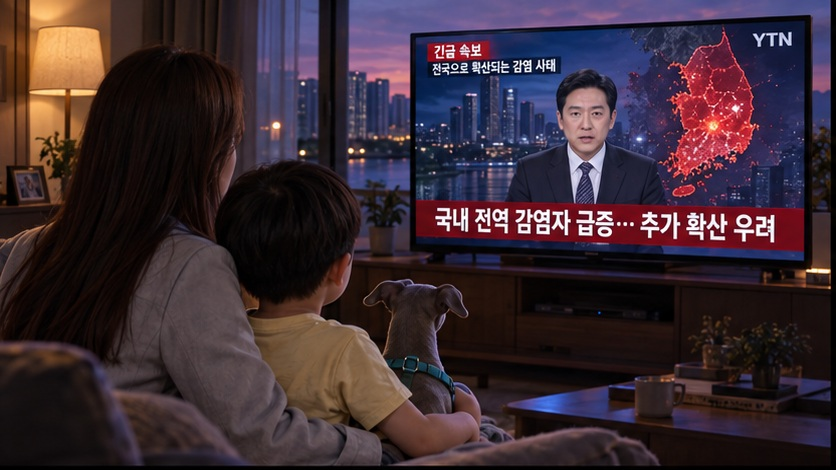
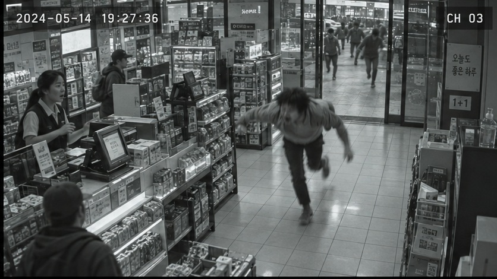
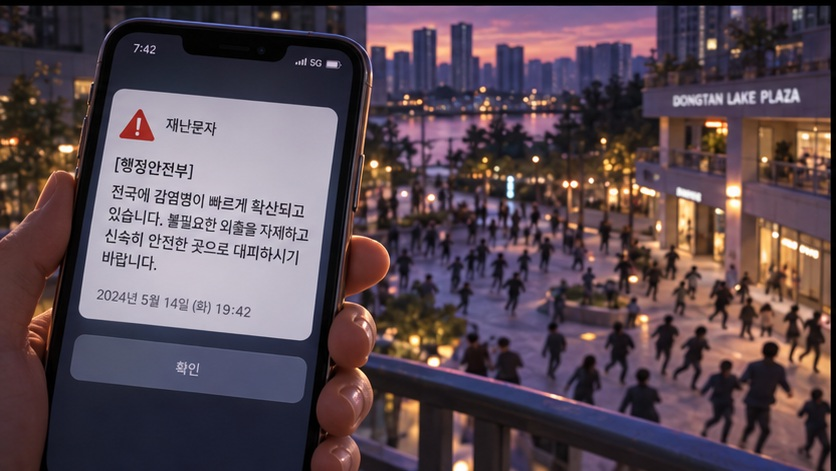
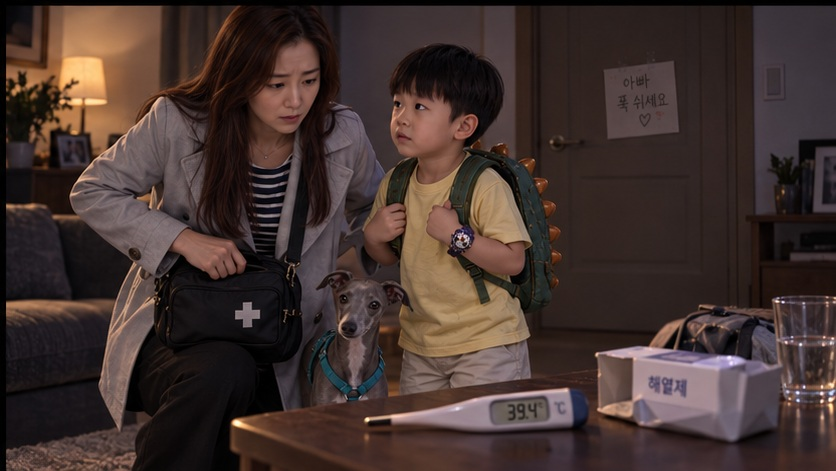
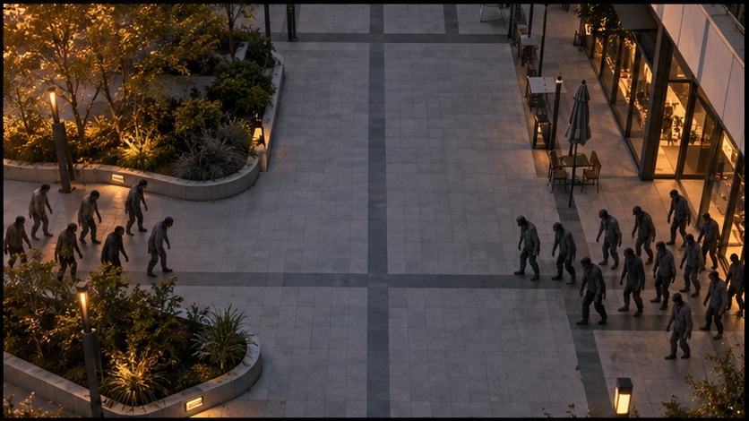
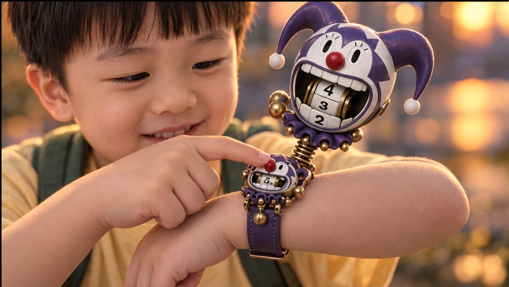
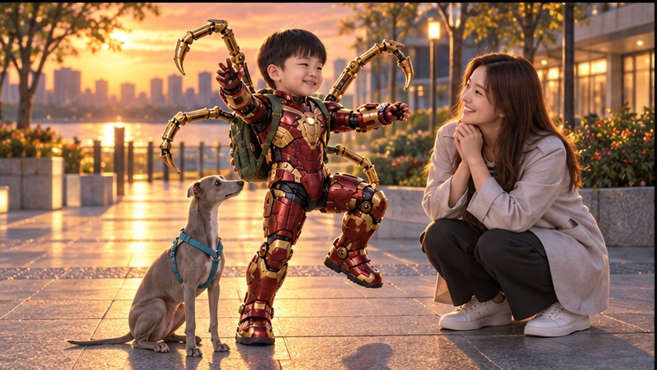
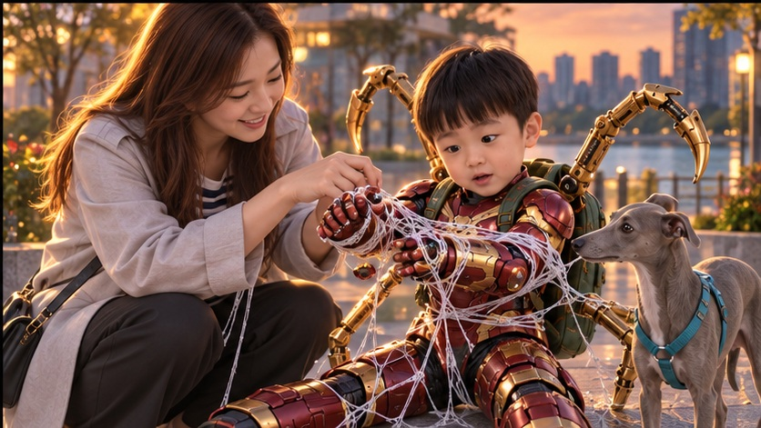
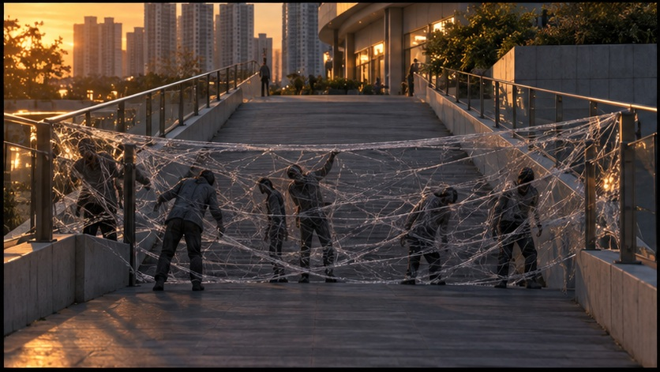

EP.01 영화풍 컬러 콘티
라크몽의 좀비들 — 7번이 나왔다
아빠의 약을 구하러 나선 릴리와 서진이, 그리고 루나. 크레이지 슬롯의 7번 슈트로 포위망을 벗어나지만 귀갓길에는 또 다른 무리가 기다린다.
웹소설 기준 대표 콘티 24컷 · 22장면 연결 · 2026.10.11 갱신
24컷은 장면의 핵심을 보여 주는 그림입니다. 가족 동작과 좀비 원경을 교차해 구성했습니다. 일부 추격·회피 동작은 장면 설명에 보완했습니다. 세부 하드컷 구성과 촬영 지시는 아래 장면별 표에서 확인할 수 있습니다. 기존 프리비즈 영상은 이전 이야기입니다.







